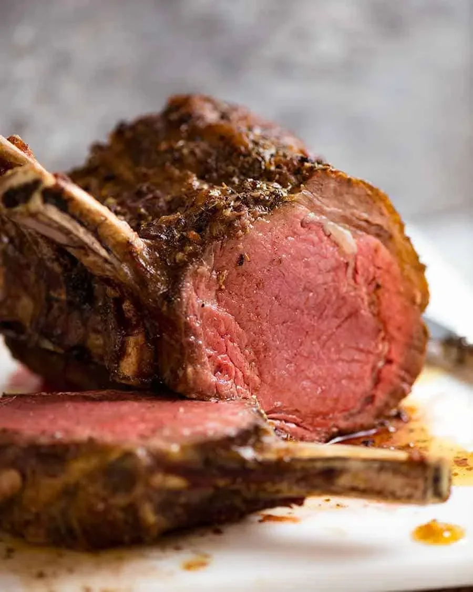

Reverse-Sear Prime Rib Roast
48-hour rosemary-umami dry-brined bone-in prime rib roasted low-and-slow for edge-to-edge medium-rare, served with silky melted onions, horseradish cream, and red wine au jus.
Instructions
Tap a step when done1. Make the Rosemary Salt: Pulse 14 sprigs stripped rosemary, 8 sprigs stripped sage, 3–5 peeled garlic cloves, and the zest of 1 lemon in a food processor for 60 seconds until finely minced. Add 1 cup kosher salt and run another 30–45 seconds until it looks like bright-green damp sand.
2. Mix the Rub: Scoop 2.5 to 3 tbsp of the rosemary salt into a small bowl and stir in 1/2 tsp MSG (or 1 tbsp porcini powder). Spread leftover rosemary salt on a tray to air-dry overnight, then jar for future cooks.
3. Prep & Score: Pat the prime rib completely dry. Trim any hard fat cap down to ~1/2 inch thick and lightly score the fat in a shallow cross-hatch pattern without cutting into the meat.
4. Season & Dry Brine: Set the roast fat-side up on a wire rack over a rimmed baking sheet. Rub 3 tbsp Worcestershire sauce over every surface, then press the rosemary-umami salt evenly across all sides. Refrigerate uncovered for 24 to 48 hours.
1. Horseradish Sauce: Whisk mayonnaise, sour cream, creme fraiche, drained horseradish, lemon juice, Worcestershire sauce, and white wine vinegar until smooth. Fold in chopped chives, season with salt and black pepper, and refrigerate overnight so flavors meld.
2. Au Jus Base: Combine beef bone broth, dry red wine, soy sauce, Worcestershire sauce, rosemary sprigs, and smashed garlic in a saucepan over medium heat. Simmer 15–20 minutes until fragrant and slightly reduced. Strain and chill until dinner.
1. Temper & Pepper: Pull the roast 1 hour before cooking. Rub lightly with 2 tbsp neutral oil, coat generously with 1–2 tbsp coarse cracked black pepper, and insert a leave-in probe thermometer into the exact geometric center (avoiding bone).
2. Low Roast: Roast fat-side up at 200°F–225°F (standard bake, no convection) for roughly 3 to 4.5 hours depending on weight, until the center hits 115°F–118°F for edge-to-edge medium-rare.
3. Melted Onions: While the roast cooks, scrunch the thinly sliced onions and 2 tsp kosher salt in a heavy pot with clean hands for 1–2 minutes until juicy. Stew covered/uncovered over low heat for ~60 minutes, stirring every 5–10 minutes (adding a splash of water if dry) until completely soft. Over very low heat, stir in the 6 oz cold cubed butter a few cubes at a time so it emulsifies into a glossy, silky sauce.
1. Rest: Remove the roast at 115°F–118°F and rest 25–35 minutes (carryover brings it to 125°F–132°F). Travel option: vent uncovered 15 mins, wrap snugly in parchment then foil, and hold in a towel-packed insulated cooler up to 3 hours.
2. Blistering Sear: Crank oven to 475°F–500°F. Pat the roast exterior dry, pour 1/2 cup water into the bottom of the sheet pan beneath the wire rack to prevent smoke, and sear uncovered for 6–8 minutes until deeply browned and crisp.
3. Finish & Carve: Rewarm the au jus and whisk in 1 tbsp cold butter off the heat until glossy. Snip the twine, slice the rib eye off the bone in 1/2-inch slabs, and serve immediately with warm au jus, melted onions, and cold horseradish cream.